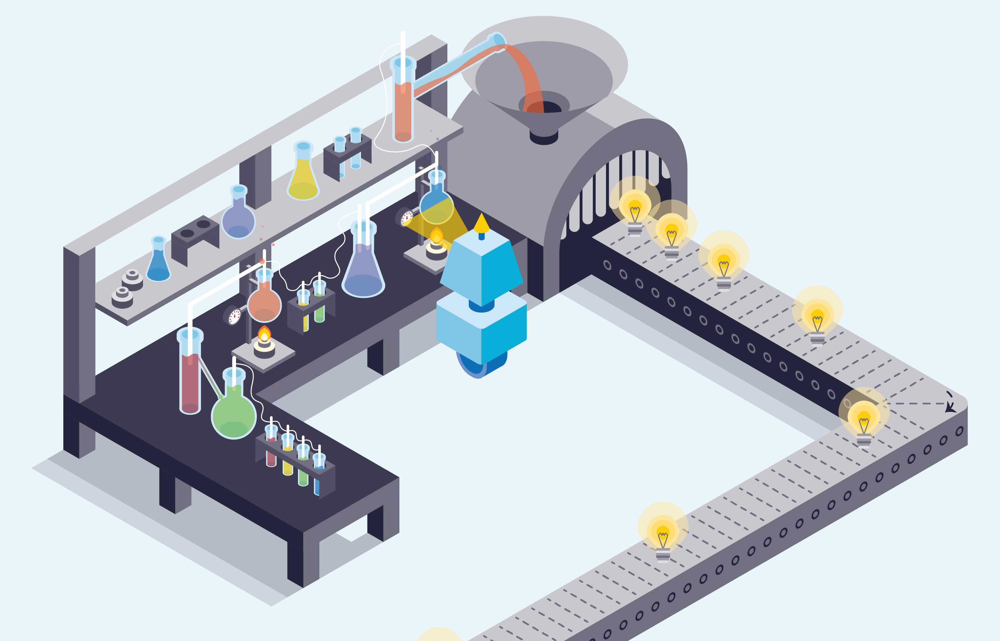
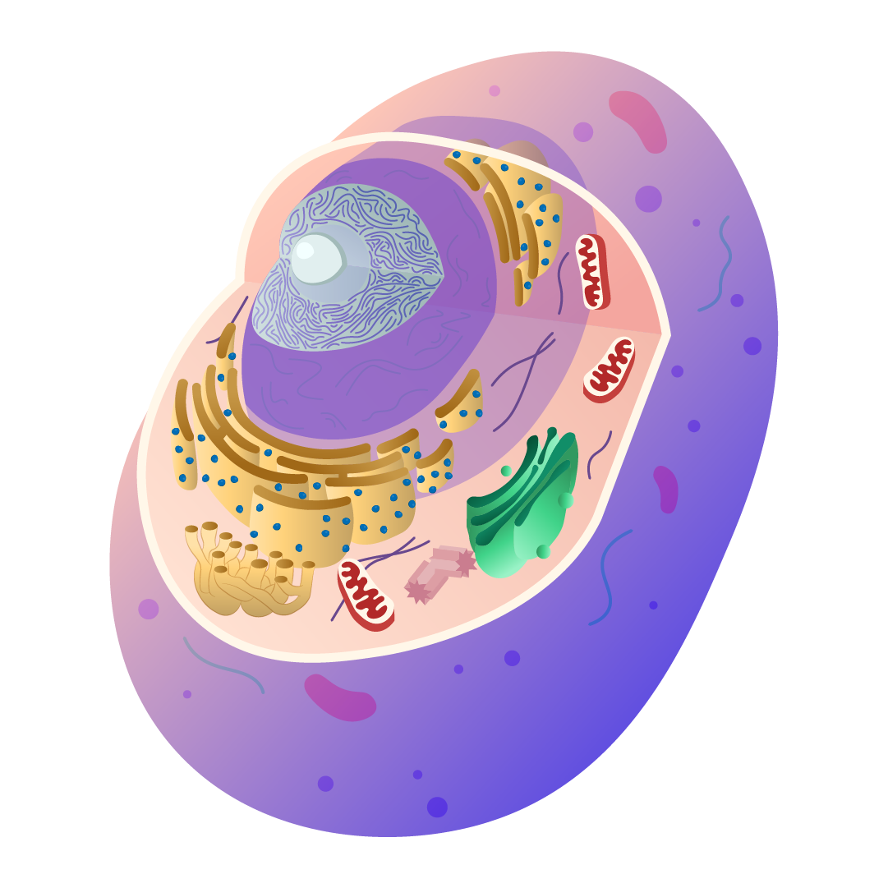
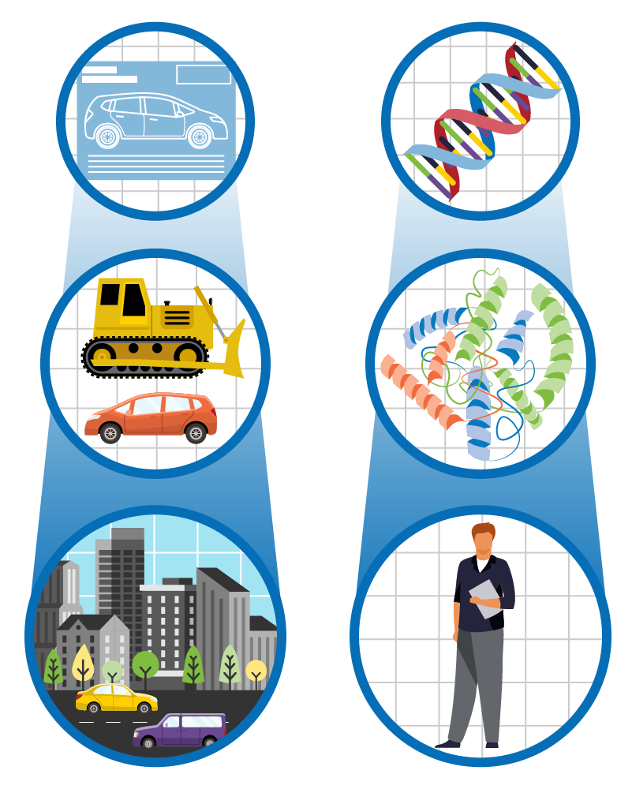

The Broad Institute of MIT and Harvard
Machine Learning Article Header
ML Data Patterns Graphic
Machine learning can detect patterns and connections in data that other tools can miss.
ML MRI Analysis Graphic
Broad researchers trained a machine learning algorithm to analyze heart MRI images for signs of increased disease risk.

ML Redesigning Experiments Graphic
Machine learning can help researchers gain greater insight from their experiments.
ML Applications Graphic
New machine learning tools are being developed to tackle a variety of challenges in biomedical research.

Cell Illustration
